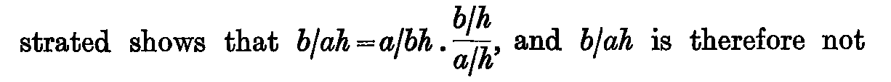
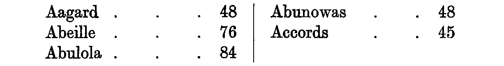

Chapter XXV. Some Problems Arising out of the Discussion of Chance
J. M. Keynes, A Treatise on Probability (London: Macmillan, 1921), first edition, pp. 293–306 (Cornell copy, PDF pp. 313–326). Formula atlas: every ledger row of the chapter beside the printed line it records.
| In Lean (✓+≈+✎+外) | 1 / 4 formulas, 25.0% — of which proved (✓+≈+✎) 1: ✓0 ≈1 ✎0; not yet 3 |
|---|---|
| Ledger rows | 11 |
| Formulas | 4 (display 3, inline 1; items 4, numbered 0) |
| Formulas by Lean status | ✓0 ≈1 ✎0 未3 |
| Not yet, by class | Approximation / measured value3 |
| Notation | 6 (with a Lean counterpart 6) |
| Reference rows | 1 |
Every count on this page is computed from the census ledger, which is built from the page images of the 1921 first edition only (no translation, OCR or e-text is used to count). A formula is an expression containing a relation sign (=, ≠, <, >, ≤, ≥, ≡, ⊃, → and their printed variants, including formulas inside figures, tables and footnotes, and formulas quoted from other authors); a display formula counts one per printed line, so a chain of equalities set over three lines counts three, and an inline formula counts one per expression. A compound expression without a relation sign (such as a/h, g(φ, f) or x1x2…xn/ġh) is counted separately as notation; a bare symbol, even with subscripts, primes or bars, is not counted. Footnote formulas follow the same rule, and a formula reprinted on another page is counted again. The Lean column of a formula row takes one of six values, fixed mechanically (legend below).
Legend: the Lean column of a formula row
- ✓Printed form
- the printed relation appears in a theorem statement (only bound-variable names, Lean notation and subscript layout may differ).
- ≈Equivalent form
- the theorem states an algebraically equivalent form (denominators cleared, a definition substituted, hypotheses re-parametrised).
- ✎Corrected form
- the printed form is refuted and a corrected form is the theorem.
- 外Depends on a named external axiom
- depends on a named external axiom (e.g. independence, equal chance) that Keynes's own axioms do not yield; the theorem is proved, the premise is not.
- 定Definition counterpart
- the line defines, names, fixes a notation, or states a premise of an example (not a claim to be derived); it is carried as a hypothesis, and the Lean definition, or the theorem whose hypothesis carries it, is cited; there is no theorem statement to compare.
- 未Not yet
- nothing in the statement of any theorem (lines inside a proof, values absorbed by substitution, sums only). The card names one of the five classes below.
Not yet (未): five classes
- Other author's formula
- another author's formula, quoted or criticised by Keynes; a theorem refuting it, if any, is named; ✎ is not used, since ✎ is reserved for Keynes's own printed errors.
- Rejected by Keynes
- a rule or a simplified form that Keynes himself rejects as invalid, or says does not follow.
- Boundary: needs an outside axiom
- boundary: the line becomes a theorem only if an axiom Keynes does not state is added, e.g. an application of the Principle of Indifference such as φ(x)/h = φ(y)/h, or a probability value assigned in an example; the contrast is
phase12b_underdetermination/underdetermined, where the axioms leave a/h undetermined. - Approximation / measured value
- an equation printed as approximate, or a value from a table of measurements.
- No general proof
- no proof of the general form: only numerical checks, finite-model values, or steps inside a proof.
ch25-001
- Transcription
a/h- Lean
- Nphase3c/th_14_38_full
- Anchor words
Then- Remarks
- 事象の先験的確率。定理文 (α := b, β := a) の分母
Pr a h(第 3 回で対応に数えた、裁定事項) - Crop
- folio 298, x 125–1335, y 290–340 (full-size scan pixels)
ch25-002
- Transcription
a/bh ;- Lean
- Nphase3c/th_14_38_full
- Anchor words
very small in comparison with- Remarks
- 定理文の
Pr a (b ∧ h) - Crop
- folio 298, x 125–1335, y 290–340 (full-size scan pixels)
ch25-003
- Transcription
b/ah,- Lean
- Nphase3c/th_14_38_full
- Anchor words
we require- Remarks
- 求める確率 (事象の後の行為者の存在)。定理文の左辺
Pr b (a ∧ h) - Crop
- folio 298, x 125–1335, y 340–391 (full-size scan pixels)
ch25-004

- Transcription
b/ah = a/bh . (b/h)/(a/h),- Lean
- ≈phase3c/th_14_38_full
- Anchor words
already demonstrated shows that- Remarks
- 逆確率原理 (第14章 (38))。α := b, β := a で
Pr b (a ∧ h) = Pr a (b ∧ h) * Pr b h / Pr a h(束縛変数の名前の差は許す)。≈ の理由: 印刷は右端の横線分数 (分子b/h、分母a/h) を一つの因子としてX . (Y/Z)と組むが、定理文は(X * Y) / Zで結合が違う (裁定事項)。同名の写し phase3d, phase5, phase6a, phase7b; 内包担体版 phase6c/th_14_38_full_i (同形); 基本形 phase3a/th_14_38_b。ドットは積。行内だが分数のため行間が広い - Crop
- folio 298, x 125–1335, y 441–548 (full-size scan pixels)
ch25-005
- Transcription
b/ah- Lean
- Nphase3c/th_14_38_full
- Reprint of
- ch25-003
- Anchor words
is therefore not determinate- Remarks
- 定理文の
Pr b (a ∧ h) - Crop
- folio 298, x 125–1335, y 441–548 (full-size scan pixels)
ch25-006
- Transcription
a/bh- Lean
- Nphase3c/th_14_38_full
- Reprint of
- ch25-002
- Anchor words
determinate in terms of- Remarks
- 定理文の
Pr a (b ∧ h) - Crop
- folio 298, x 125–1335, y 548–599 (full-size scan pixels)
ch25-007
- Transcription
a/h- Lean
- Nphase3c/th_14_38_full
- Reprint of
- ch25-001
- Anchor words
alone. Thus we cannot(直後)- Remarks
- 定理文の
Pr a h - Crop
- folio 298, x 125–1335, y 548–599 (full-size scan pixels)
ch25-008
- Transcription
3·48 = ²√12- Lean
- 未Approximation / measured value(近似・実測値: Playfair の比重の表の値で、印刷は approximately、許容誤差は印刷にない。差の大きさ keynes_misc_numerics/th_25_playfair_gap_sizes)
- Quoted from
- Playfair
- Anchor words
Diamond- Remarks
- Lyon Playfair の比重の表 1 行目。小数点は中点、根号指数 2 は √ の左上に小字 (原寸で確認)。「approximately」と続く。近似等式を式に数える (裁定事項)。既存の Lean に対応なし。B50: 未のまま。印刷は "approximately" で許容誤差が印刷にない (Playfair の表の近似値)。参考: keynes_misc_numerics/th_25_playfair_roots_within (差が 1/50 未満; 許容誤差は本ファイルの置き方) と keynes_misc_numerics/th_25_playfair_gap_sizes (3·48 − √12 > 1/100、差の大きさを述べるだけ)。folio 305 の 3·48 等は実測の比重で、√12 等に "approximately" 等しいと言っているだけなので、印刷の誤りの候補とする所見 (旧 所見候補 S) は撤回した (B50 r1 司令塔裁定)。行の判定には使わない
- Crop
- folio 305, x 125–1335, y 330–397 (full-size scan pixels)
ch25-009
- Transcription
2·29 = ³√12- Lean
- 未Approximation / measured value(近似・実測値: Playfair の比重の表の値で、印刷は approximately、許容誤差は印刷にない。差の大きさ keynes_misc_numerics/th_25_playfair_gap_sizes)
- Quoted from
- Playfair
- Anchor words
Graphite- Remarks
- 同表 2 行目。既存の Lean に対応なし。B50: 未のまま。ch25-008 と同じ (approximately)。参考: keynes_misc_numerics/th_25_playfair_gap_sizes (2·29 と ∛12 の差の絶対値が 1/200 未満; 差の大きさ)
- Crop
- folio 305, x 125–1335, y 397–463 (full-size scan pixels)
ch25-010
- Transcription
1·88 = ⁴√12- Lean
- 未Approximation / measured value(近似・実測値: Playfair の比重の表の値で、印刷は approximately、許容誤差は印刷にない。差の大きさ keynes_misc_numerics/th_25_playfair_gap_sizes)
- Quoted from
- Playfair
- Anchor words
Charcoal- Remarks
- 同表 3 行目。直後
approximately, the atomic weight of carbon being 12.。既存の Lean に対応なし。B50: 未のまま。ch25-008 と同じ (approximately)。参考: keynes_misc_numerics/th_25_playfair_gap_sizes (1·88 − ⁴√12 > 1/100; 差の大きさ)。ch25-008 と同じく旧 所見候補 S は撤回 (B50 r1) - Crop
- folio 305, x 125–1335, y 463–530 (full-size scan pixels)
ch25-011

- Transcription
Aagard . . . 48 / Abeille . . . 76 / Abulola . . . 84 ‖ Abunowas . . . 48 / Accords . . . 45- Lean
- R未
- Quoted from
- Peirce
- Anchor words
with their ages at death :- Remarks
- Peirce の詩人 5 人の享年表 (2 段組、印刷 3 行、縦罫で区切る)。数値のみで演算子・関係記号なし。式にも記法にも数えない (数えるなら記法 5 本、裁定事項)。出典 Peirce, *A Theory of Probable Inference* (脚注 1)
- Crop
- folio 304, x 125–1335, y 1440–1602 (full-size scan pixels)